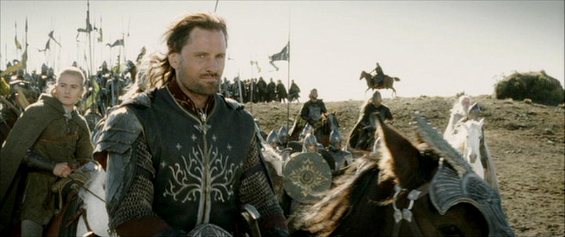
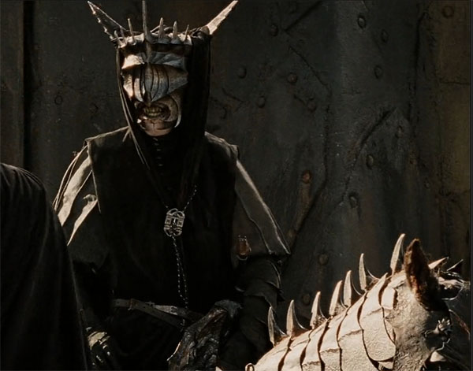
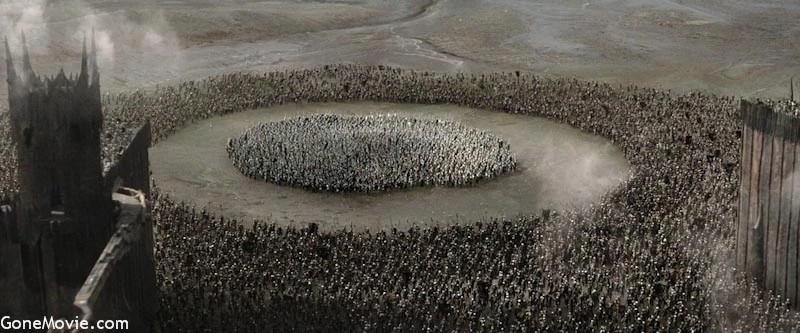

Background:
After the victory of the Free Peoples in the Battle of the Pelennor Fields, the enemy retreated to Mordor. Sauron was defeated but he still had thousands of Orcs and evil Men at his disposal in Mordor. He was aware that the One Ring was somewhat close to the vicinity of his territory, but he did not know that the Hobbit Frodo Baggins and his companion Samwise Gamgee had entered Mordor via the pass of Cirith Ungol with the intention of destroying the Ring.
After the Last Debate, the Men of the West assembled the Host of the West, 7,000 strong, led by Aragorn, who marched on the Black Gate as a diversionary feint to distract Sauron's attention from Frodo and Sam, who were carrying the One Ring through Mordor to be destroyed in the fires of Mount Doom. It was hoped that Sauron would think Aragorn had the Ring and was now trying to use it to overthrow him in Mordor.
Parley:
Initially, the Host of the West consisted of 7,000 men, but a strong force was left to guard the Cross-roads. Part way through Ithilien the army was ambushed by Haradrim and Easterlings, but they were easily detected by the Rangers of Ithilien and driven off with few casualties.
Then, as the army approached Dagorlad, some of the farmers of Lossarnach and Rohan were too afraid to continue into the Desolation of the Black Gate. Aragorn dismissed the faint-hearted, ordering them to liberate Cair Andros on the river Anduin, further reducing the strength of the army.
Before the battle began, the Black Gate opened slightly, letting out a small embassy. At the head was a high servant of Sauron, a Black Númenórean called the Mouth of Sauron, who had been ordered to speak with the Captains of the West. He reasoned that the Army of the West could not defeat Sauron's host on the battlefield, and demanded the Army surrender.
The Lieutenant then brought forth several items that had belonged to Frodo and Sam (Sam's sword, an Elven cloak, and Frodo's Mithril shirt). Gandalf asked for the terms of their surrender, which were to allow Sauron dominion over Isengard and Rohan, as well as Gondor's vassalage. Gandalf vehemently refused.
Realizing the Army intended to fight and being outnumbered, fear and anger overcame the Lieutenant, and he retreated to the Black Gate, which then opened to reveal a massive army of Sauron's forces. Thousands of Orcs also emerged from the hillsides around the Black Gate and an Easterling force hidden behind Carchost emerged.
Battle:
Against the Host of the West was arrayed large hordes of Orcs, Trolls, and Mannish allies such as the Easterlings and Haradrim. An exact count of Sauron's host is not given, but it is said that they were "ten times and more than ten times" greater than the Host of the West, making it a force of at least 60,000. Sauron's forces surrounded the Army of the West entirely, circling around them to prevent any escape.
Initially, Sauron's forces found difficulty in getting to the Army of the West, due to the large slag pools and pits of waste surrounding parts of the Black Gate, which impeded their progress. This gave Aragorn time to prepare his forces, splitting them between two Slag Hills.
During the course of the battle, the remaining eight Nazgûl emerged and attacked the Army of the West. Shortly thereafter, however, the Great Eagles of the Misty Mountains, led by Gwaihir the Windlord, arrived and attacked the Ringwraiths, preventing them from pressing their aerial advantage.
Trolls began to crash through the lines of infantry, and the Orcs and Easterlings made renewed assaults on the Army of the West, encircling it. That was when Frodo put on the One Ring and Sauron realized that Frodo and the Ring were inside Mount Doom. Immediately the forces of Sauron began to waver as his will was no longer driving them on.
Conclusion:
The Nazgûl immediately left the battle to intercept Frodo. Before they could get there, however, Gollum bit the Ring off Frodo's finger and slipped into the Crack of Doom, destroying the Ring and ending Sauron's power.
Barad-dûr, the Black Gate, and the Towers of the Teeth collapsed to ruin. At this the Orcs and other creatures of Sauron at the battle scattered in disarray, and were routed by the Host of the West or fled. Seeing the power of Mordor collapse, some of the Easterlings and Haradrim fought on to the end, whilst others surrendered and were pardoned.
The desperate gambit of the West had succeeded, even as Frodo ultimately succumbed to the Ring. It was destroyed forever, and Sauron was disembodied permanently, his shadow fading away from Barad-dûr. Many surviving Orcs and Men retreated to the mountains or northward, where fighting against Sauron's remaining forces would continue for several weeks, notably at Dol Guldur in Mirkwood and at Erebor, but the power of the Dark Lord of Mordor was no more. The Western soldiers, weary and many injured, rested and healed before the host marched back to Minas Tirith.
Losses:
| Free Men | Mordor | |
|---|---|---|
| Casualties |
Rohirrim: light losses Gondor: light losses |
Thousands, many slayed The great mayority fleed and were defeated later |
| Leaders Lost |
Sauron The Nazgûl |